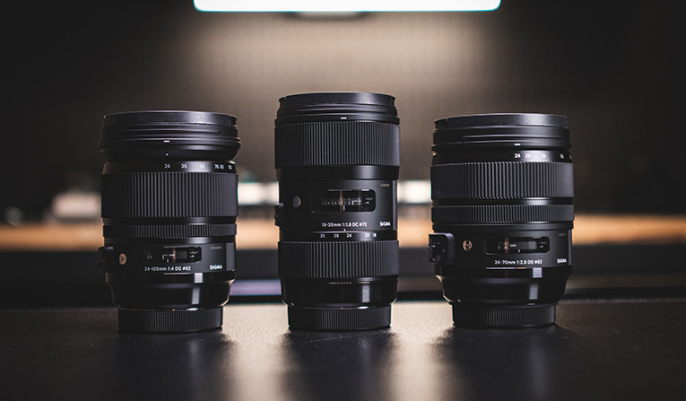

Depth of Field
The term depth of field is common photography jargon. It refers to the part of a photo that is in acceptably sharp focus. The range of how much is in focus varies depending on the settings you choose and the camera and lens you use. One of the first things photographers learn about depth of field is that it is controlled by the aperture. This is correct but incomplete information. There are other factors that govern the depth of field. These are:
- The size of your camera’s sensor
- The distance you are from your subject
- The focal length of the lens
Managing these variables well allows you to set a shallow or a deep depth of field. How you combine these has other effects when taking photos. Aperture settings are part of what influences how photos are exposed. Sensor size and focal length combinations produce different compositions. So does the distance you are from your subject. Being aware of these variables and how they interact with each other helps you take better photos as well.

What is the Depth of Field?
Depth of field refers to the distance, from closest to farthest, in a photo that appears to be acceptably sharp or in focus. It denotes the extent of the photograph that is in focus. When you focus your lens, everything at the same distance from your camera’s sensor will be precisely in focus. Anything closer or further away will not be so sharp. But whatever is ‘acceptably sharp’ is within the depth of field.
Imagine the point you focus on being on a plane that’s parallel to your camera’s sensor. Whatever is on that plane and within your composition will be sharp. Whatever is closer to you or further away will not be so sharp. The change from sharp to blurred is not abrupt. Points closer to the plane are sharper than those further from it. Sharpness decreases the further from the focus plane a point is. So, elements closer to the plane where you have focused are going to be sharper than those further from it.
- Controlling the F Stop to Adjust Depth of Field
- The Effect of Lens Focal Length on Depth of Field
- How Subject Distance Affects Depth of Field?
- Why It’s Important to Control Depth of Field?
The F Stop, or F-Number, denotes the lens aperture setting. This is the size of the opening the diaphragm in your lens is set to. Every lens has this adjustable opening. It’s part of the exposure triangle and is used to help regulate light entering the camera. It also affects the depth of field. The narrower the opening, the higher the f stop, the deeper the depth of field. Less light will also be able to enter the camera. The wider the opening of the diaphragm, the lower the f stop, the shallower the depth of field. More light will also be able to enter the camera. Look at Lesson 2 for more information about Aperture.
The focal length of the lens is also a contributor to the appearance of depth of field. A longer focal length lens will produce a shallower looking depth of field compared to a wider lens. That is one reason landscape photographers prefer using wide-angle lenses. Consider taking a photo with a 200mm lens and a 50mm lens on cameras with the same size sensors. Both lenses are photographing the same subject. They both are focused on the same distance and have the same f-number setting. The photos taken with the 200mm lens have a shallow depth of field than a photo taken with a 50mm lens.
The composition will also be a lot different. This is because the longer focal length lens crops in tighter when at the same focus distance as the 50mm lens. Elements at different distances from the camera also appear closer together with the longer lens. Telephoto lenses have the characteristic of compressing depth in compositions. The greater the difference in lens focal length, the more noticeable the variance in DoF is. Distances appear more compressed the longer the focal length lens that is being used. This also contributes to the appearance of the depth of field being shallower at any particular aperture setting.
The closer what you are focused on is to the camera, the shallower depth of field your photo has. The further away you are focused, the deeper depth of field your photo has. This relationship with subject distance is true for any camera and lens combination. How focus distance affects depth of field is more obvious in some types of photography than in others. In macro photos, only a small part of the main subject might be sharp. This is because the camera to subject distance is very short. So, even when you set your f stop to the highest number when you are focused very close to your subject, you may only have a very shallow depth of field.
When you want to isolate a building or tree in a landscape, it can be challenging to create a shallow depth of field. You need to back up from your large subject so you can capture all of it. The more you back away and increase the focal point distance, the more of your image will look acceptably sharp.
You can isolate your subject using a very shallow depth of field. You can create a deep depth of field when it’s important to have the closest and the furthest objects sharp. Controlling the depth of field in your photographs can help convey meaning and produce the desired atmosphere. Having the equipment to allow you the most choice makes a difference. As I discussed above, some lenses afford you more flexibility than others. Often these lenses may not be easy to afford. The wider the aperture setting on a lens, the more expensive it is. So you need to learn to manage the gear you have to capture the style of photo you want.
Your intent is what makes the difference — knowing how you want your photo to turn out guides your choices for how you will control the depth of field. But it’s not only a matter of choosing between a very shallow depth of field or a deep depth of field. Being in control of how much of your image is sharp allows you to create more interesting compositions.

Tips for Managing Depth of Field?
- Know What Your Want
- Manage Your Focal Length
- Choose the Most Effective F Stop (Aperture)
- Close Means More Blur
- Practice Managing Depth of Field
Having a clear idea in mind for how you want your photos to turn out is one key to becoming a successful photographer. Part of this is knowing how much of each photo you take to be sharp. Leaving this to chance does not help you produce more creative photos. Instead, it will lead you in the opposite direction, and you’ll end up with a higher percentage of images you throw out.
Purposefully choose which focal length lens you will use partly based on how much depth of field you want. The lens you use has a strong influence on the depth of field and composition in general. You can make or ruin a photo opportunity with your lens choice.
Set the f stop to achieve the style and amount of blur you want. This will depend on the effective focal length of the lens you’re using and the crop factor of your image sensor. You will get used to this when you practice often.
Subject distance plays a significant part in capturing the best depth of field. How close or how far you are from your subject when you focus on it contributes to how much of the photo is acceptably sharp. When you want a shallower depth of field, get in closer. Reduce the distance between you and your subject, and you’ll see less of the background in focus. This is true whether you’re using a wide-angle lens, a medium lens, or a telephoto lens.
Like anything creative, the more you practice, the better at it you will become. Especially when there are so many variables and options for how your photos might turn out.